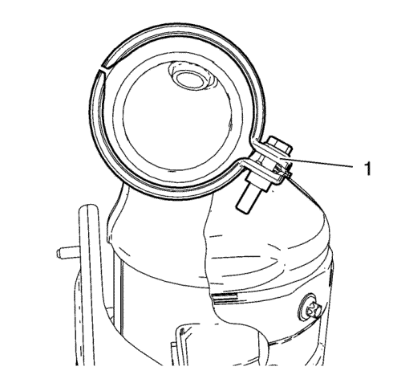

Sustitución del catalizador de tres vías de calentamiento — 1.4L LUH y LUJ
Procedimiento de desmontaje
- Abra el capó.
- Desconecte el cable negativo de la batería. Consulte Desconexión y conexión del cable negativo de la batería → sin sistema de arranque/parada.
- Desconecte el conector del mazo de cables 1 de la sonda Lambda calentada. Consulte Sustitución de la Sonda Lambda Calentada - Sensor 1 → 1.4L LUH y LUJ.
- Desmonte la pantalla térmica del colector de escape. Consultar Sustitución de la pantalla térmica del colector de escape → 2.0L Diésel LNP → 1.4L LUH y LUJ → 1.6L LDE, LXV, 1.8L 2H0 y LUW → 2.0L Diésel LLW .
- Afloje el tornillo de apriete en V del catalizador de calefacción de tres vías (2) de modo que puede retirarse la abrazadera en V del catalizador de calefacción de tres vías (1) de la brida del catalizador al turbocompresor.
- Elevar el vehículo y soportarlo de manera segura. Consultar Elevación y soporte en alto del vehículo .
Advertencia: Lleve siempre guantes y gafas protectoras cuando vaya a sustituir piezas del escape ya que los bordes afilados y el óxido que se desprende de los componentes desgastados podrían causar lesiones graves.
Atención: No doble el tubo de escape flexible más de 10 grados en cualquier dirección. Doblar más de 10 grados o retorcer en un rango de ±0,5 grados dañará el desacoplador de escape flexible.
- Retire las 3 tuercas de la brida del catalizador (2).
- Retire el catalizador (3) del catalizador de calefacción de tres vías y cuélguelo a un lado.
- Retire la junta del catalizador (1).
- Retire las 2 tuercas del soporte del catalizador de calefacción de tres vías (1) y (2).
- Retire el catalizador de calefacción de tres vías y el anillo de junta del catalizador de calefacción de tres vías al turbocompresor.
- Retire la sonda Lambda calentada 1 del catalizador de calefacción de tres vías. Consulte Sustitución de la Sonda Lambda Calentada - Sensor 1 → 1.4L LUH y LUJ.
Procedimiento de montaje
- Monte la sonda Lambda calentada 1 en el catalizador de calefacción de tres vías. Consulte Sustitución de la Sonda Lambda Calentada - Sensor 1 → 1.4L LUH y LUJ.
Nota: Jamás vuelva a utilizar la abrazadera en V.
- Monte previamente una abrazadera en V de catalizador de calefacción de tres vías NUEVA.
- Monte el catalizador de calefacción de tres vías en el turbocompresor y los soportes del catalizador de calefacción de tres vías. Monte un NUEVO anillo de junta del catalizador de calefacción de tres vías al turbocompresor.
- Monte y apriete manualmente las 2 tuercas del soporte del catalizador de calefacción de tres vías (1) y (2).
- Bajar el vehículo.
- Monte una abrazadera en V del catalizador de calefacción de tres vías en la brida del catalizador al turbocompresor.

- La abrazadera en V del catalizador de calefacción de tres vías (1) deberá colocarse en la posición indicada.
- Apriete manualmente la abrazadera en V del catalizador de calefacción de tres vías.
- Elevar el vehículo y soportarlo de manera segura.
Precaución:Consulte Precaución con las fijaciones en la sección Prólogo.
- Apriete las 2 tuercas del soporte del catalizador de tres vías a 22 N·m (16 lib. pie).
- Monte el catalizador (3) y una NUEVA junta de catalizador (1) en el catalizador de calefacción de tres vías.
- Monte las 3 tuercas de la brida del catalizador (2) y apriételas a 22 N·m (16 lib. pie).
- Bajar el vehículo.
- Apriete el tornillo de la abrazadera en V del catalizador de tres vías a 13 N·m (115 lib. pulg.).
- Monte la pantalla térmica del colector de escape. Consultar Sustitución de la pantalla térmica del colector de escape → 2.0L Diésel LNP → 1.4L LUH y LUJ → 1.6L LDE, LXV, 1.8L 2H0 y LUW → 2.0L Diésel LLW .
- Conecte el enchufe del mazo de cables 1 de la sonda Lambda calentada. Consulte Sustitución de la Sonda Lambda Calentada - Sensor 1 → 1.4L LUH y LUJ.
- Conecte el cable negativo de la batería. Consulte Desconexión y conexión del cable negativo de la batería → sin sistema de arranque/parada.
- Cierre el capó.
| © Copyright Chevrolet. All rights reserved |